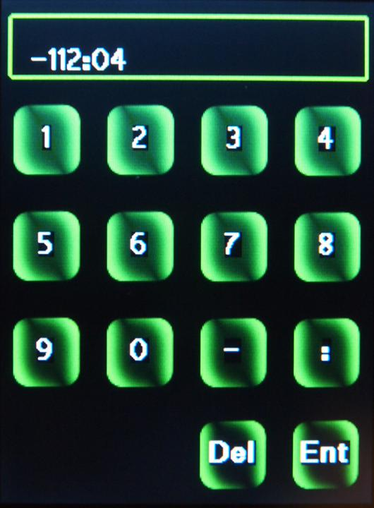

| Quick Start Tutorial - click on green button to Navigate |
|  | If you touch in the top where the -112:04 is displayed, it will go blank. You can now enter the new Longitude. You enter degrees:minutes:seconds. This entry screen will take seconds, but seconds will not be shown on the hand controller main site page. To enter seconds you entry would look something like this: -112:04:36 if entering 36 seconds. Note: Seconds and minutes have to be 0 to 59. Please note that these entries do not modify the permanent setting. If you press on any of the sites in Site selection menu, you will loose these setting. Hit the "ENT" key, and you will be taken back to the Site selection menu. Hit the "ENT" key, and you will be taken back to the previous menu. |